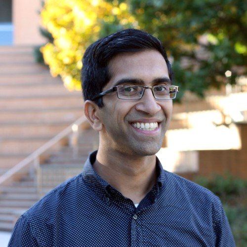

Gautam Kamath
Office: TBD 60FA
Cell Phone: 657-c0mpsci (657-206-7724)
Email: g@csail.mit.edu
Links to: CV (as of August 2026);
Google Scholar;
DBLP;
arXiv;
GitHub;
Twitter;
Youtube;
Blog.
My group is The Salon.
I host office hours as part of the Learning Theory Alliance. Book a slot here.
Feel free to send me comments anonymously here. Note that, by design, I won't be able to respond -- if you need me to, it's better handled via email, or leaving some way for me to reply.
|

|
About Me
I am an Assistant Professor of Computer Science at the Courant Institute of Mathematical Sciences at NYU, where I am affiliated with the Theoretical Computer Science Group and Computational Intelligence, Vision, and Robotics Lab (CILVR), and on leave from the University of Waterloo's Cheriton School of Computer Science and the Vector Institute.
I run The Salon.
I'm interested in reliable and trustworthy statistics and machine learning, including considerations such as data privacy and robustness.
My work has been recognized with the 2026 Gödel Prize, the 2026 Presburger Award, the Ontario Early Researcher Award in 2025, the 2024 Caspar Bowden Award for Outstanding Research in Privacy Enhancing Technologies (and the 2026 runner up), and a best paper award at ICML 2024.
I am an Editor-in-Chief of Transactions on Machine Learning Research. I was program co-chair of ALT 2025. I serve as part of the governance of several conferences, including COLT, ALT, ICML, FORC, and SaTML.
Previously, I was a Microsoft Research Fellow at the Simons Institute for the Theory of Computing for the Fall 2018 semester program on Foundations of Data Science and the Spring 2019 semester program on Data Privacy: Foundations and Applications.
Before that, I completed my Ph.D. at MIT, affiliated with the Theory of Computing group in CSAIL.
I was very fortunate to be advised by Costis Daskalakis.
Before MIT, I spent four wonderful years at Cornell University, graduating in May 2012 with a degree in Computer Science and Electrical and Computer Engineering.
At Cornell, I was incredibly lucky to have the opportunity to work with Bobby Kleinberg.
News
Older News
Some Travel
2026
- January 12 - 14: Workshop on mathematical foundations of AI security, NYU London, London, UK
- January 15: Imperial College London Data Science Institute Seminar, London, UK
- February 20: Remarkable, Vector Institute, Toronto, Ontario, Canada
- February 23 - 27: ALT 2026 and ShaiFest, Toronto, Ontario, Canada
- March 12 - 13: NYU, New York, New York, USA
- April 7 - 10: Foundations of Replicability and Verifiability in AI, EnCORE UCSD, San Diego, California, USA
- April 16 - 17: Workshop on Robust Statistics, Columbia University, New York, New York, USA
- June 16 - 18: AICan, Victoria, British Columbia, Canada
- July 6 - 7: ICML, Seoul, South Korea
- July 8 - 10: ICALP, London, UK
- July 22 - 23: PETS, Calgary, Alberta, Canada
- July 27 - 29: Workshop on Sublinear Algorithms and Differential Privacy, TTIC, Chicago, Illinois, USA
- September 25: Princeton University Theory Lunch, Princeton, New Jersey, USA
- October 19 - 23: Exploring Responsible AI through Security and Privacy, NII Shonan Meeting, Hayama, Kanagawa, Japan
- November 4: Rutgers/DIMACS Theory of Computing Seminar, New Brunswick, New Jersey, USA
- December 16 - 18: FSTTCS, New Delhi, India
2027
- April 23: Kempner Institute at Harvard University, Cambridge, Massachusetts, USA
Most authorships are in alphabetical order, as is common in areas of computer science.
Papers with contribution-order authorship are indicated, and equal contributions are marked with * or ^.
Generally, these will put the students as first-author, with equal contribution amongst the senior authors.
ⓡ is used for randomized author order.
Selected Papers (Show all)
- ContinuousBench: Can Differentially Private Synthetic Text Improve Capabilities?.
Peihan Liu*, Lucas Rosenblatt, Weiwei Kong, Natalia Ponomareva, Gautam Kamath, Rachel Cummings, Roxana Geambasu, Yu Gan, Lillian Tsai, Alex Bie*. (Contribution order)
Manuscript.
- Presented at TPDP 2026. Oral Presentation.
- Datasets are available here, code is available here.
- Advancing Differential Privacy: Where We Are Now and Future Directions for Real-World Deployment.
Rachel Cummings, Damien Desfontaines, David Evans, Roxana Geambasu, Matthew Jagielski, Yangsibo Huang, Peter Kairouz, Gautam Kamath, Sewoong Oh, Olga Ohrimenko, Nicolas Papernot, Ryan Rogers, Milan Shen, Shuang Song, Weijie Su, Andreas Terzis, Abhradeep Thakurta, Sergei Vassilvitskii, Yu-Xiang Wang, Li Xiong, Sergey Yekhanin, Da Yu, Huanyu Zhang, Wanrong Zhang.
Harvard Data Science Review, 6(1), 2024.
- Report of the 1st Workshop on Generative AI and Law.
A. Feder Cooper, Katherine Lee, James Grimmelmann, Daphne Ippolito, Christopher Callison-Burch, Christopher A. Choquette-Choo, Niloofar Mireshghallah, Miles Brundage, David Mimno, Madiha Zahrah Choksi, Jack M. Balkin, Nicholas Carlini, Christopher De Sa, Jonathan Frankle, Deep Ganguli, Bryant Gipson, Andres Guadamuz, Swee Leng Harris, Abigail Z. Jacobs, Elizabeth Joh, Gautam Kamath, Mark Lemley, Cass Matthews, Christine McLeavey, Corynne McSherry, Milad Nasr, Paul Ohm, Adam Roberts, Tom Rubin, Pamela Samuelson, Ludwig Schubert, Kristen Vaccaro, Luis Villa, Felix Wu, Elana Zeide.
Manuscript.
- Differentially Private Fine-tuning of Language Models.
Da Yu, Saurabh Naik, Arturs Backurs*, Sivakanth Gopi*, Huseyin A. Inan*, Gautam Kamath*, Janardhan Kulkarni*, Yin Tat Lee*, Andre Manoel*, Lukas Wutschitz*, Sergey Yekhanin*, Huishuai Zhang*. (Contribution order)
Journal of Privacy and Confidentiality, 14(2), 2024.
Proceedings of the 10th International Conference on Learning Representations (ICLR 2022).
- 2026 Caspar Bowden Award for Outstanding Research in Privacy Enhancing Technologies, runner-up.
- Featured in: Microsoft Research Blog.
- Presented at the ICML 2022 Workshop on Theory and Practice of Differential Privacy (TPDP 2022).
Selected Workshop Papers (Show)
- ContinuousBench: Can Differentially Private Synthetic Text Improve Capabilities?.
Peihan Liu*, Lucas Rosenblatt, Weiwei Kong, Natalia Ponomareva, Gautam Kamath, Rachel Cummings, Roxana Geambasu, Yu Gan, Lillian Tsai, Alex Bie*. (Contribution order)
Theory and Practice of Differential Privacy 2026 (TPDP 2026). Oral Presentation.
- Machine Unlearning Fails to Remove Data Poisoning Attacks.
Martin Pawelczyk*, Jimmy Z. Di*, Yiwei Lu, Gautam Kamath^, Ayush Sekhari^, Seth Neel^. (Contribution order)
ICML 2024 2nd Workshop on Generative AI and Law. Oral Presentation.
- Robustness Implies Privacy in Statistical Estimation.
Samuel B. Hopkins, Gautam Kamath, Mahbod Majid, Shyam Narayanan.
Theory and Practice of Differential Privacy 2023 (TPDP 2023). Oral Presentation.
- Calibration with Privacy in Peer Review.
Wenxin Ding, Gautam Kamath ⓡ Weina Wang ⓡ Nihar B. Shah.
AAAI 2022 Workshop on Privacy-Preserving Artificial Intelligence (PPAI 2022). Oral Presentation.
- Private Hypothesis Selection.
Mark Bun, Gautam Kamath, Thomas Steinke, Zhiwei Steven Wu.
CCS 2019 Workshop on Theory and Practice of Differential Privacy (TPDP 2019). Oral Presentation.
-
Sever: A Robust Meta-Algorithm for Stochastic Optimization.
Ilias Diakonikolas, Gautam Kamath, Daniel M. Kane, Jerry Li, Jacob Steinhardt, Alistair Stewart.
NeurIPS 2018 Workshop on Security in Machine Learning (SECML 2018). Oral Presentation.
-
Priv'IT: Private and Sample Efficient Identity Testing.
Bryan Cai, Constantinos Daskalakis, Gautam Kamath.
ICML 2017 Workshop on Private and Secure Machine Learning 2017 (PSML 2017). Oral Presentation.
Theses
Here are some videos of talks I've given.
My (168) co-authors include:
Jayadev Acharya,
Ishaq Aden-Ali,
Sushant Agarwal,
Hassan Ashtiani,
Arturs Backurs,
Jack M. Balkin,
Shai Ben-David,
Alex Bie,
Sourav Biswas,
Franziska Boenisch,
Christina Brandt,
Miles Brundage,
Mark Bun,
Bryan Cai,
Christopher Callison-Burch,
Clément L. Canonne,
Nicholas Carlini,
Rachel Cummings,
Xi Chen,
Madiha Zahrah Choksi,
Christopher A. Choquette-Choo,
A. Feder Cooper,
Christian Covington,
Elliot Creager,
Debeshee Das,
Constantinos Daskalakis,
Anindya De,
Christopher De Sa,
Damien Desfontaines,
Jimmy Z. Di,
Ilias Diakonikolas,
Nishanth Dikkala,
Wenxin Ding,
Yihe Dong,
Jack Douglas,
Adam Dziedzic,
David Evans,
Ali Falahati,
Jonathan Frankle,
Yu Gan,
Deep Ganguli,
Xiao-Shan Gao,
Roxana Geambasu,
Bryant Gipson,
Sivakanth Gopi,
James Grimmelmann,
Xin Gu,
Andres Guadamuz,
Steve Hanneke,
Swee Leng Harris,
Xi He,
James Honaker,
Samuel B. Hopkins,
Yangsibo Huang,
Nicole Immorlica,
Huseyin A. Inan,
Daphne Ippolito,
Valentio Iverson,
Abigail Z. Jacobs,
Matthew Jagielski,
Ayush Jain,
Elizabeth Joh,
Peter Kairouz,
Adam Kalai,
Daniel M. Kane,
Sara Kodeiri,
Robert Kleinberg,
Weiwei Kong,
Janardhan Kulkarni,
Christian Janos Lebeda,
Tosca Lechner,
Katherine Lee,
Yin Tat Lee,
Mark Lemley,
Amit Levi,
Jerry Li,
Qiaobo Li,
Peihan Liu,
Tie-Yan Liu,
Xingtu Liu,
Zuoqiu Liu,
Andrew Lowy,
Xiaoqian Lu,
Yiwei Lu,
Mahbod Majid,
Andre Manoel,
Cass Matthews,
Christine McLeavey,
Corynne McSherry,
David Mimno,
Shubhankar Mohapatra,
Ankur Moitra,
Sabrina Mokhtari,
Argyris Mouzakis,
Audra McMillan,
Niloofar Mireshghallah,
Saurabh Naik,
Shyam Narayanan,
Milad Nasr,
Seth Neel,
Aleksandar Nikolov,
Sewoong Oh,
Paul Ohm,
Olga Ohrimenko,
Nicolas Papernot,
Martin Pawelczyk,
Natalia Ponomareva,
Alireza F. Pour,
Matthew Regehr,
Adam Roberts,
Ryan Rogers,
Lucas Rosenblatt,
Tom Rubin,
Pamela Samuelson,
Jack Sanderson,
Sajin Sasy,
Ludwig Schubert,
Ayush Sekhari,
Nihar B. Shah,
Or Sheffet,
Milan Shen,
Rose Silver,
Vikrant Singhal,
Adam Smith,
Shuang Song,
Jacob Steinhardt,
Thomas Steinke,
Alistair Stewart,
Weijie Su,
Pranav Subramani,
Ziteng Sun,
Ananda Theertha Suresh,
Andreas Terzis,
Om Thakkar,
Abhradeep Thakurta,
Florian Tramèr,
Lillian Tsai,
Christos Tzamos,
Lukas Wutschitz,
Jonathan Ullman,
Kristen Vaccaro,
Nicholas Vadivelu,
Sergei Vassilvitskii,
Luis Villa,
Erik Waingarten,
Yihan Wang,
Weina Wang,
Yu-Xiang Wang,
David P. Woodruff,
John Wright,
Felix Wu,
Zhiwei Steven Wu,
Ruicheng Xian,
Li Xiong,
William Xu,
Matthew Y.R. Yang,
Sergey Yekhanin,
Jian Yin,
Da Yu,
Yaoliang Yu,
Lydia Zakynthinou,
Elana Zeide,
Guojun Zhang,
Huanyu Zhang,
Huishuai Zhang,
Jie Zhang
Wanrong Zhang,
Han Zhao.
They originate from a number of countries, including Argentina, Australia, Austria, Brazil, Bulgaria, Canada, China, France, Germany, Greece, India, Indonesia, Iran, Israel, Latvia, Lebanon, New Zealand, Romania, Russia, South Korea, Switzerland, Turkey, United Kingdom, United States of America.
- I am an Editor-in-Chief of TMLR.
- I'm part of the Executive Committee of the Learning Theory Alliance.
- I am a board or steering committee member for: International Conference on Machine Learning (ICML), Association for Computational Learning (COLT), Association for Algorithmic Learning Theory (ALT), Theory and Practice of Differential Privacy (TPDP).
- I have been (or will be) program committee chair for the following conference: ALT 2025.
- I have been (or will be) a general chair for the following conferences: STOC 2020.
- I have been (or will be) program chair/organizer for the following workshops: TPDP 2021, TPDP 2022, UpML 2022, Workshop on Responsibly Enabling Data for Foundation Models (catchy name TBD).
- I have been (or will be) on the core program committee or an area chair for the following conferences: SODA 2020, ICML 2020, ICALP 2020, Random 2020, ICLR 2021, FORC 2021, COLT 2021, CCS 2021, ESA 2021, NeurIPS 2021, SODA 2022, ICLR 2022, AAAI 2022, COLT 2022, NeurIPS 2022, SaTML 2023, FOCS 2023, ICLR 2023, ALT 2023, USENIX Security 2023, COLT 2023, FAccT 2023, ICML 2023, NeurIPS 2023, COLT 2024, NeurIPS 2024, STOC 2025, COLT 2025, ICML 2025 (Position Paper Track), SODA 2026, SaTML 2026, ALT 2026, COLT 2026, STOC 2027.
- I have been (or will be) on the program committee (i.e., a reviewer) of the following machine learning conferences: NIPS 2016, ICML 2018, NeurIPS 2018, AISTATS 2019, ICML 2019, NeurIPS 2019, AAAI 2020, AISTATS 2020, FAccT 2021, ALT 2021, ALT 2022, UAI 2022, CANAI 2024.
- For completeness, conferences I have reviewed for include: AAAI, AISTATS, ALT, COLT, FAccT, FOCS, ICALP, ICML, ISAAC, ISIT, ITCS, NeurIPS, RANDOM, SODA, STACS, STOC.
- I have (or will be) on the program committee of the following workshops: TPDP 2019, PriML 2019, TPDP 2020, PPML 2020, PriML 2021, ICBINB 2021, ICBINB 2022, ICBINB 2023, Regulatable ML 2023, PPAI 2024, TPDP 2024, TPDP 2025.
- I mentor when I can. Some examples include at workshops for Women in Machine Learning, the Learning Theory Alliance, and junior-senior lunches at STOC/FOCS (which I sometimes organize). I also view my Twitter presence as a type of mentorship.
- I am a maintainer of the CS Theory Blog Aggregator, along with Nima Anari and Arnab Bhattacharyya.
- Clément Canonne and I organized a workshop called "A TCS Quiver" at FOCS 2019.
- Clément Canonne and I organized a workshop on distribution testing at FOCS 2017.
- Clément Canonne and I organized a workshop on orthogonal polynomials at FOCS 2016.
- I was previously an editor for the MIT Theory of Computation Student Blog and Property Testing Review.
- I'm one of the organizers of TCS+, an online seminar series in theoretical computer science, accessible to the widest possible audience, and ensuring a carbon-free dissemination of ideas across the globe.
- I organized the second Sublinear Day, which was on April 10, 2015 at MIT.
- I was the head organizer for the Second Annual Danny Lewin MIT Theory Student Retreat, which took place in October 2013.
Aloni and Themis wrote a bit about this retreat here.
- From Fall 2012 to Fall 2013, I was in charge of the Theory Group lunch, which was the current incarnation of Great Ideas in Theoretical Computer Science at CSAIL.
The website for the current offering is here.
New York University
- CSCI-GA 3033 - Honors Machine Learning: Fall 2026
University of Waterloo
I'm very lucky to work with a number of great students -- check out their profiles on my group's People page.
Here is a collection of collections of talk videos.
- TCS+: An series of online seminars in theoretical computer science.
- Simons Institute Videos: Videos from workshops hosted at the Simons Institute for the Theory of Computing.
- BIRS Videos: Videos from workshops hosted at the Banff International Research Station.
- Institute for Advanced Studies Videos: Videos from the IAS. Note that many are related to other fields besides computer science.
- Microsoft Research Talks: Talks at Microsoft Research, including a variety of topics beyond theory.
- Shannon Channel: A series of online seminars in information theory.
- Princeton TCS Videos: Videos from theory lunch and workshops within Princeton's theory group.
- Videolectures.net: Lecture videos from a number of conferences and workshops, seems to be primarily focused on machine learning events.
- I used to go by the name "G", though I now prefer Gautam. Also, my name is not Guatam Kamath, though it is commonly misspelled as such.
- My friends Aviv Adler, Greg Bodwin, and primarily Jennifer Tang, made a small puzzle hunt for my graduation. You can check out the puzzles here: 1, 2, 3, 4, 5, 6. Warning that they can be incredibly unfair if you are not me, but oh well. Try them out!